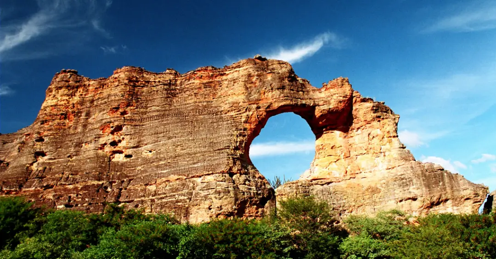
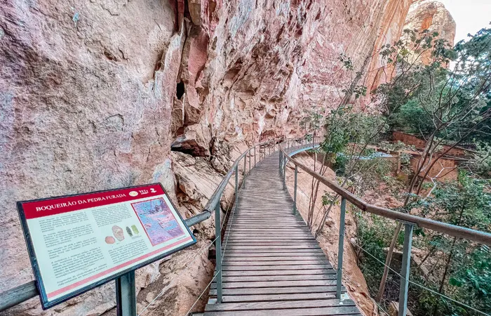
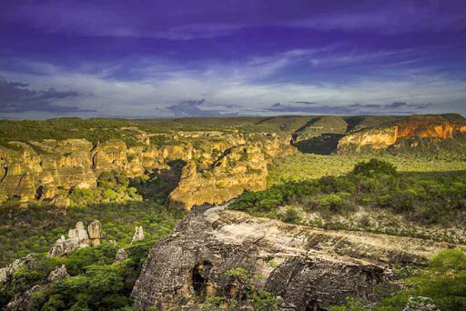

Sobre a região

O Parque Nacional Serra da Capivara, localizado no sudeste do Piauí, é um Patrimônio Cultural da Humanidade (UNESCO) com a maior concentração de sítios arqueológicos das Américas.
O que fazer por aqui

A Serra da Capivara é um dos destinos arqueológicos mais fascinantes do mundo, sendo reconhecida pela UNESCO como Patrimônio da Humanidade. Para aproveitar bem a região, você deve focar no Parque Nacional Serra da Capivara, nos museus tecnológicos e nas vivências culturais locais.
Como Chegar
Para chegar ao Parque Nacional da Serra da Capivara, no Piauí, a principal cidade de apoio é São Raimundo Nonato. Como o aeroporto local tem ofertas de voos limitadas ou sazonais, a maioria dos visitantes utiliza as cidades de Petrolina (PE) ou Teresina (PI) como porta de entrada.

Página de contato
ICMBio (Gestão Federal)
Órgão ambiental responsável pela preservação e normas da Unidade de Conservação.
Telefone: (89) 3582-2085
E-mail: parnaserradacapivara@icmbio.gov.br
Página de Visitação: ICMBio - Serra da Capivara